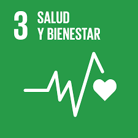

Projeto criado para ajudar apaixonados por futebol a melhorar seu desempenho com saúde e bem-estar. Aqui, os atletas encontram ferramentas para evoluir no jogo
Funcionalidades da Plataforma
Aplicação web para atletas amantes de futebol, oferecendo dicas de treinamentos validadas por profissionais e dashboard interativa que serve como medidor de estatísticas.

Benefícios do Treinamento
O treinamento no futebol melhora a resistência física, aperfeiçoa habilidades como controle de bola e passes, e fortalece o foco e a resiliência mental. Esses ganhos elevam o desempenho em campo e promovem bem-estar geral.